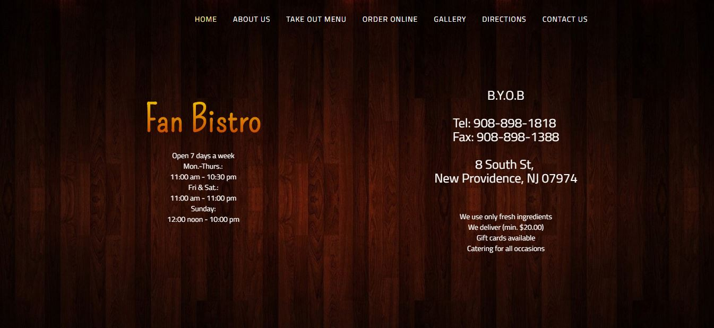

Annie Zhou
:
: Github
: LinkedIn
: Printable Resume
I love learning and am always looking for problems to solve and things to create. I've used programming to contribute to open source code and spread my love of programming through hackathons and summer programs (spent sophomore summer teaching Scratch to kids). I've helped CodersForSanders with website design and data entry, and even tried creating software for restaurants (both incredibly difficult tasks and great learning experiences).
- Work Experience
-
Everything Benefits June 2016 - September 2016
Software Development Intern
Found a mobile solution to the B2B cloud application. This involved Swift and Android development, as well as extensive programming into a Java enterprise application using Oracle.
Gained expertise in: Java, Swift, Android. Learned
-
HackUC 2015-Present
Director of Technology (2016) and Board of Founders (2015) Created the official website from scratch (including logo) and organized and mentored at the event.
Backed by (MLH), an organization that partners with more than 100 hackathons around the world..
Led the development of the 2015-16 official website, working on UI/UX, interactivity, SEO, and speed optimization. It was created using HTML/CSS/Javascript.
Created sponsorship package and worked on cold-emailing potential companies and communicating with them. Analyzed venue options and power and wifi considerations in each to select the optimal venue for HackUC 2016
Led HackUC 2015, handling registration, kick-off presentation. Mentored new coders and oversaw events. It was a huge success, with more than $4700 raised and 100+ participants. 93.4% were new to hackathons, and 33% were female. I reached out for mentors and we were able to offer 6 courses.
Gained expertise in: HTML/CSS(Bootstrap), JavaScript, Illustrator, Responsive Design
-
Fan Bistro New Providence, NJ : 2016-Present
Head Desk: Taking orders, answering phone, packaging sushi (yum). Hostess: seating customers. Finished training period ($9/hr to $10/hr) in two weeks after being told it would take five weeks because I was the fastest learner they'd ever seen. I also redesigned their website for fun, but it's not the official one (since their site was synced to restaurant computer software that mine couldn't connect to)
Learned: Patience, Multi-tasking, Customer Service, Working with a Team
 -
Kumon Berkeley Heights, NJ : 2015-2016
Head Desk Employee - taught children/older kids who needed help, handled parents, entered data into computer. Once had a parent request that I personally tutor her child that I often helped with math at Kumon.
Achievements: Ran Kumon for two weeks while Head Instructor was on vacation. Always the one to go to for math help.
- Education/Awards
-
UCVTS Magnet High School Scotch Plains, NJ

Ranked 2th best school in the nation by Newsweek in 2014, 4th best in the nation in 2015
Relevant Courses Taken: Introduction to Programming (2015-16), Manufacturing and Project Management (2016), Linear Algebra and Programming (2016)
Manufacturing and Project Management Final: Laser Cut Lamp
-
Free Code Camp 2015
Front End Certification
in JavascriptIncluded creating a Simon Game, Tic Tac Toe Game, Wikipedia Viewer,and many more projects. Did intermediate algorithms.
-
Columbia Science Honors Program 2014-Current
A highly selective, competitive program (5-8% acceptance rate) that allows high school students to take interesting courses during Saturdays of the academic year.
Relevant courses taken: Graph Theory by Example (2015)
I loved the course, and took a strong interest in Graph Theory. It taught applications in computer science, biology/chemistry, game theory, and linguistics. -
MOOCs
Relevant online courses taken: Artificial Intelligence (MIT), Machine Learning (Stanford), Game Theory (Yale), How to Start a Startup (Stanford), Justice (Harvard).
I found them all insanely fascinating, and these were watched beginning to end with notes taken. There were many other unfinished courses as well. -
NCWIT National Runner Up 2016
National Center for Women in Technology
One of 360 in the nation (1% of applicants) to be awarded this honor.
-
NJ Governor's School of Science 2016
Highly selective (~12% acceptance rate) free 3 week residential summer program for high school juniors interested in science and technology. Only the top 1-3 kids (depending on size of school) in all ~400 schools in NJ can apply, and from there only 58 are accepted.
This opportunity lead to the best three weeks of my life, and I'm so lucky to have been able to have it. I learned so much from the people around me, and had a lot of fun with late night ice cream runs, pillow fort constructions, and spontaneous discussions about the history of calculus.Courses Taken: Neuroscience, Special Relativity, Mathematical Impossibilities.
Lab Course: Computer Science (Cellular Automata).
Research Project: Rocket Science - Interests
-
MEAN Stack - Javascript
My preferred development stack, I'm proficient in MongoDB, Express.js, Angular.js, and Node.js. I also have experience with Jade, React, and Scotch.io.
Projects using MEAN include a reddit clone, ToDo List App, and ClickCounter with Github Authetication. I've also used it to create a TimeStamp Microservice and Voting App.
Received Front End Certification from FreeCodeCamp.
-
Artificial Intelligence
Finished Stanford's Machine Learning course by Andrew Ng (2015) and Artificial Intelligence by MIT (2016)
I enjoyed the math/logic involved and am very eager to get my hands dirty in this area. AI is a strong interest of mine.
Learned: MATLAB. Familiarity with: Neural Networks, Goal/Identification Trees, Genetic Algorithms
-
Cryptography
Read The Code Book by Simon Singh, found it incredibly interesting. While I have no experience, cryptography is something I'd like to explore. (Also recommend the book - it's a fascinating read)
-
Java
Took AP Computer Science and got a 5 on the AP Exam (2014)
Very familiar with Object Oriented Programming and proficient with processing.js(Java Library) and Android Development. Projects include an Android Timer App, Pong game, Raindrop Catching Game, Doodle Jump Clone, Physics Based Calculator.
- Personal Projects
-
Google Code In
Participated in 2015, got certificate and t-shirt. Contributed code to Fossasia, MetaBrainz.
Programmed in React, Jade, javascript
-
Doodle Jump Clone
Midterm Project for School, Head Programmer
Cloned Doodle Jump in Processing.js, a library of Java. Used public libraries for music.
Gained Proficiency in Object Oriented Programming, processing.js -
Science Olympiad 2014-2017

Captain 2015-2016
Designed sweatshirts, fundraised, recruited new members, delegated tasks and led team meetings, planned competitions, solved any problems, and motivated others.
Familiarity with WordPress: created UCVTS Science Olympiad website
2015 States Results: 5th and 8th, best record in history of UCVTS
States Champion in Designer Genes; Second Place in Protein Modeling, Cell Bio